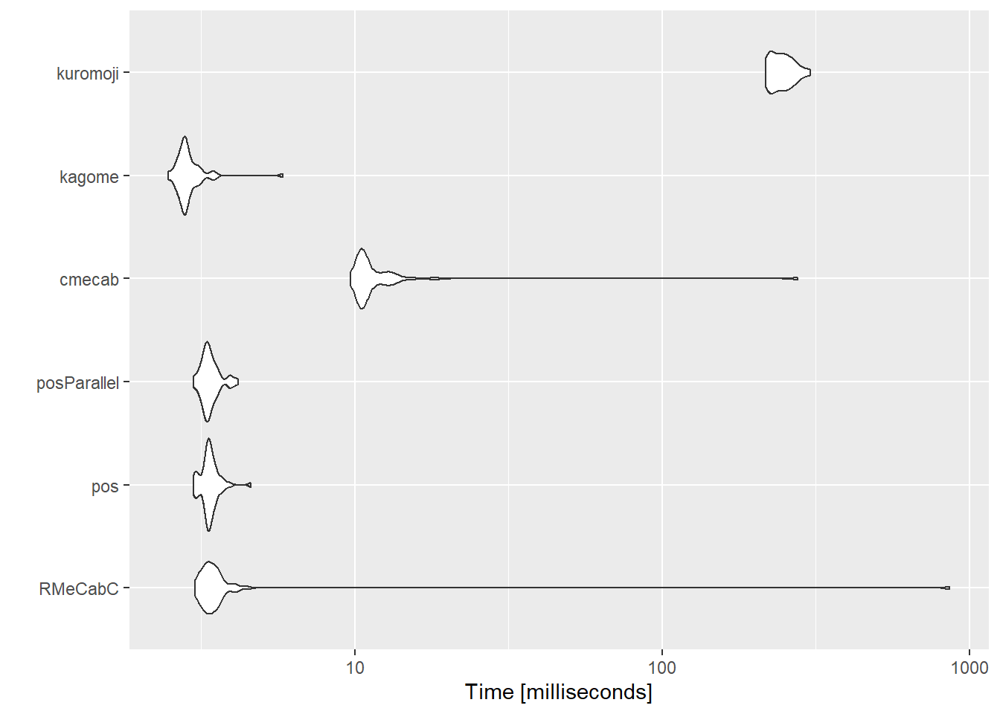
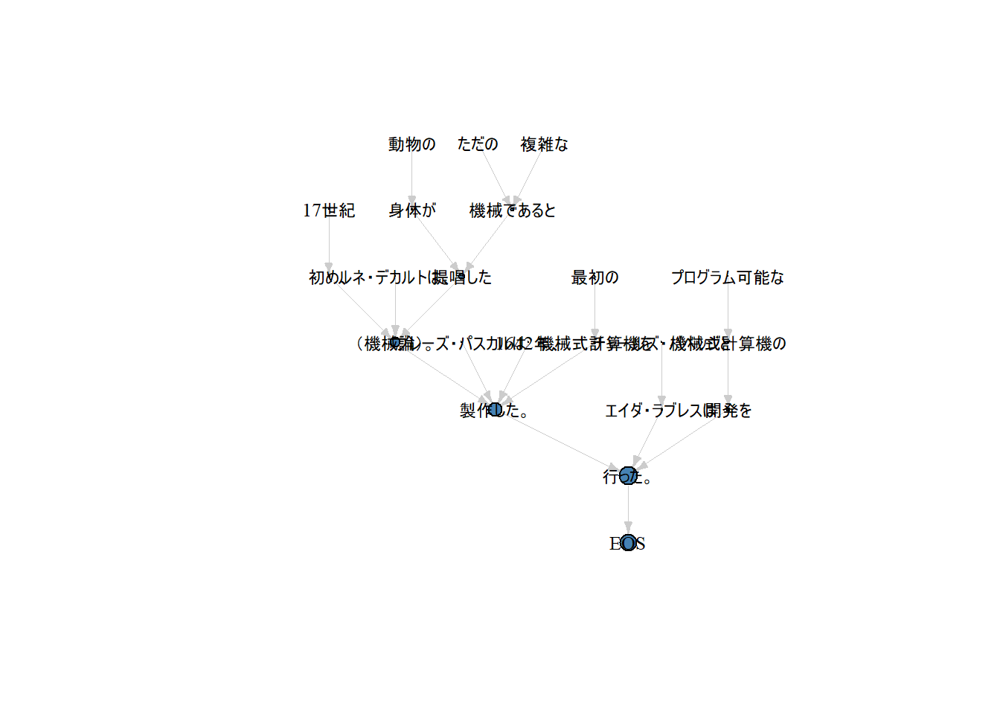

係り受け解析
2020-07-11
0.1 本書について
Rで言語処理100本ノック 2020 (Rev 1) に取り組んでいます。
Rでやっているコードの例を示すにとどまるもので、丁寧な解説を添えているようなものではありません。中盤以降もできそうなのでやろうとは思っていますが、実際にやる見通しは立てていません。
0.2 全体の見通し
2020年版に触ってみますが、ぜんぶは解きません。無理です。
ググって出てくる範囲では2015年版にはyamano357さんが取り組んでいます。RcppでMeCabとCaboChaのバインディングを自分で書いて解いている本格派です。
2020年版もやろうとしている人がいるようです。
2020年版も7章の単語ベクトルあたりまではPure Rでいけそうですが、おそらく8章のディープ・ニューラルネットあたりからバックエンドにPythonを利用することになり、10章の最終題の翻訳デモの構築でふつうにPythonを利用しなければならなくなるはずなので詰みます。
0.3 使用する環境など
本書はWindows10 (64bit) でチャンクを実行してビルドしています。
0.3.2 Rパッケージ
使用するおもなパッケージです。
stopifnot(
require(tidymodels),
require(RcppKagome),
require(pipian),
require(textrecipes),
## 以下はこのセクションでのみ使うもの ##
require(RMeCab),
require(rjavacmecab),
require(tangela),
require(sudachir)
)#> Loading required package: tidymodels#> -- Attaching packages ------------------------------------------ tidymodels 0.1.2 --#> √ broom 0.7.3 √ recipes 0.1.15
#> √ dials 0.0.9 √ rsample 0.0.8
#> √ dplyr 1.0.2 √ tibble 3.0.4
#> √ ggplot2 3.3.3 √ tidyr 1.1.2
#> √ infer 0.5.4 √ tune 0.1.2
#> √ modeldata 0.1.0 √ workflows 0.2.1
#> √ parsnip 0.1.4 √ yardstick 0.0.7
#> √ purrr 0.3.4#> -- Conflicts --------------------------------------------- tidymodels_conflicts() --
#> x purrr::discard() masks scales::discard()
#> x tidyr::extract() masks magrittr::extract()
#> x dplyr::filter() masks stats::filter()
#> x dplyr::lag() masks stats::lag()
#> x purrr::set_names() masks magrittr::set_names()
#> x recipes::step() masks stats::step()#> Loading required package: RcppKagome#> Loading required package: pipian#> Loading required package: textrecipes#> Loading required package: RMeCab#> Loading required package: rjavacmecab#>
#> Attaching package: 'rjavacmecab'#> The following objects are masked from 'package:RcppKagome':
#>
#> prettify, tokenize#> Loading required package: tangela#> Loading required package: sudachir#>
#> Attaching package: 'sudachir'#> The following object is masked from 'package:tangela':
#>
#> rebuild_tokenizer0.4 資料
参考としてRで形態素解析するパッケージの速度比較をします。
以下を試しています。
- RMeCab::RMeCabC
- rjavacmecab::cmecab
- RcppKagome::kagome
- tangela::kuromoji
- sudachir::form(mode = “A”, type = “surface”)
以下は解析する文書のサンプル。
csv <- file.path("miyazawa_kenji_head.csv") %>%
readr::read_csv() %>%
dplyr::sample_n(50L) %>%
dplyr::mutate(
sentences_shift_jis = iconv(sentences, from = "UTF-8", to = "CP932")
)#>
#> -- Column specification ------------------------------------------------------------
#> cols(
#> rowid = col_double(),
#> sentences = col_character()
#> )#> tibble [50 x 3] (S3: spec_tbl_df/tbl_df/tbl/data.frame)
#> $ rowid : num [1:50] 169 545 733 70 310 569 99 543 836 514 ...
#> $ sentences : chr [1:50] "「たのんでみようか。はやく来るといいな。」" "あまがえるどもも大よろこびでみんな粟のこっぷで舶来ウィスキイを一杯ずつ呑んで、キーイキーイと寝てしまいました。" "それは小岩井農場の南、あのゆるやかな七つ森のいちばん西のはずれの西がわでした。かれ草の中に二本のうずのしゅげが"| __truncated__ "五月九日、" ...
#> $ sentences_shift_jis: chr [1:50] "「たのんでみようか。はやく来るといいな。」" "あまがえるどもも大よろこびでみんな粟のこっぷで舶来ウィスキイを一杯ずつ呑んで、キーイキーイと寝てしまいました。" "それは小岩井農場の南、あのゆるやかな七つ森のいちばん西のはずれの西がわでした。かれ草の中に二本のうずのしゅげが"| __truncated__ "五月九日、" ...
#> - attr(*, "spec")=
#> .. cols(
#> .. rowid = col_double(),
#> .. sentences = col_character()
#> .. )0.4.0.1 Tokenize Character Scalar
ひとつの文について繰り返し解析する場合。
tm <- microbenchmark::microbenchmark(
RMeCabC = RMeCabC(csv$sentences_shift_jis[1]),
cmecab = cmecab(csv$sentences[1]),
kagome = kagome(csv$sentences[1]),
kuromoji = kuromoji(csv$sentences[1]),
sudachipy = sudachir::form(csv$sentences[1], mode = "A", type = "surface"),
times = 50L
)#> Parsed to 13 tokens
#> Parsed to 13 tokens
#> Parsed to 13 tokens
#> Parsed to 13 tokens
#> Parsed to 13 tokens
#> Parsed to 13 tokens
#> Parsed to 13 tokens
#> Parsed to 13 tokens
#> Parsed to 13 tokens
#> Parsed to 13 tokens
#> Parsed to 13 tokens
#> Parsed to 13 tokens
#> Parsed to 13 tokens
#> Parsed to 13 tokens
#> Parsed to 13 tokens
#> Parsed to 13 tokens
#> Parsed to 13 tokens
#> Parsed to 13 tokens
#> Parsed to 13 tokens
#> Parsed to 13 tokens
#> Parsed to 13 tokens
#> Parsed to 13 tokens
#> Parsed to 13 tokens
#> Parsed to 13 tokens
#> Parsed to 13 tokens
#> Parsed to 13 tokens
#> Parsed to 13 tokens
#> Parsed to 13 tokens
#> Parsed to 13 tokens
#> Parsed to 13 tokens
#> Parsed to 13 tokens
#> Parsed to 13 tokens
#> Parsed to 13 tokens
#> Parsed to 13 tokens
#> Parsed to 13 tokens
#> Parsed to 13 tokens
#> Parsed to 13 tokens
#> Parsed to 13 tokens
#> Parsed to 13 tokens
#> Parsed to 13 tokens
#> Parsed to 13 tokens
#> Parsed to 13 tokens
#> Parsed to 13 tokens
#> Parsed to 13 tokens
#> Parsed to 13 tokens
#> Parsed to 13 tokens
#> Parsed to 13 tokens
#> Parsed to 13 tokens
#> Parsed to 13 tokens
#> Parsed to 13 tokens#> expr min lq mean median uq max neval
#> 1 RMeCabC 2.7041 3.0572 11.25469 3.13685 3.2838 406.5554 50
#> 2 cmecab 9.7535 10.3457 12.39009 10.65920 11.0641 60.1507 50
#> 3 kagome 1.3145 1.6309 42.18946 1.70355 1.8290 2022.9049 50
#> 4 kuromoji 89.5510 92.6414 106.58247 99.72515 115.6774 207.8598 50
#> 5 sudachipy 125.2155 131.5050 171.14910 136.18660 153.4638 1557.0151 50#> Coordinate system already present. Adding new coordinate system, which will replace the existing one.
0.4.1 Tokenize Character Vector
50文を長さ50のベクトルとして与える場合。
RMeCab::RMeCabCとtangela::kuromojiは長さが1のベクトル（character scalar）しか受けつけないため、ここではsapplyでラップしています。なお、rjavacmecab::cmecabについては、ベクトルを与えられた場合は要素を改行でcollapseしてひとつの文にして解析するため、他とは挙動が異なります。
tm <- microbenchmark::microbenchmark(
RMeCabC = sapply(csv$sentences_shift_jis, RMeCabC),
cmecab = cmecab(csv$sentences),
kagome = kagome(csv$sentences),
kuromoji = sapply(csv$sentences, kuromoji),
sudachipy = sudachir::form(csv$sentences, mode = "A", type = "surface"),
times = 5L
)#> Parsed to 13 tokens
#> Parsed to 27 tokens
#> Parsed to 49 tokens
#> Parsed to 5 tokens
#> Parsed to 9 tokens
#> Parsed to 74 tokens
#> Parsed to 49 tokens
#> Parsed to 10 tokens
#> Parsed to 26 tokens
#> Parsed to 9 tokens
#> Parsed to 20 tokens
#> Parsed to 4 tokens
#> Parsed to 35 tokens
#> Parsed to 153 tokens
#> Parsed to 11 tokens
#> Parsed to 27 tokens
#> Parsed to 16 tokens
#> Parsed to 16 tokens
#> Parsed to 130 tokens
#> Parsed to 50 tokens
#> Parsed to 119 tokens
#> Parsed to 18 tokens
#> Parsed to 116 tokens
#> Parsed to 18 tokens
#> Parsed to 3 tokens
#> Parsed to 14 tokens
#> Parsed to 37 tokens
#> Parsed to 18 tokens
#> Parsed to 109 tokens
#> Parsed to 12 tokens
#> Parsed to 205 tokens
#> Parsed to 47 tokens
#> Parsed to 31 tokens
#> Parsed to 25 tokens
#> Parsed to 32 tokens
#> Parsed to 30 tokens
#> Parsed to 7 tokens
#> Parsed to 17 tokens
#> Parsed to 21 tokens
#> Parsed to 26 tokens
#> Parsed to 1 token
#> Parsed to 41 tokens
#> Parsed to 16 tokens
#> Parsed to 93 tokens
#> Parsed to 19 tokens
#> Parsed to 17 tokens
#> Parsed to 28 tokens
#> Parsed to 10 tokens
#> Parsed to 4 tokens
#> Parsed to 41 tokens
#> Parsed to 13 tokens
#> Parsed to 27 tokens
#> Parsed to 49 tokens
#> Parsed to 5 tokens
#> Parsed to 9 tokens
#> Parsed to 74 tokens
#> Parsed to 49 tokens
#> Parsed to 10 tokens
#> Parsed to 26 tokens
#> Parsed to 9 tokens
#> Parsed to 20 tokens
#> Parsed to 4 tokens
#> Parsed to 35 tokens
#> Parsed to 153 tokens
#> Parsed to 11 tokens
#> Parsed to 27 tokens
#> Parsed to 16 tokens
#> Parsed to 16 tokens
#> Parsed to 130 tokens
#> Parsed to 50 tokens
#> Parsed to 119 tokens
#> Parsed to 18 tokens
#> Parsed to 116 tokens
#> Parsed to 18 tokens
#> Parsed to 3 tokens
#> Parsed to 14 tokens
#> Parsed to 37 tokens
#> Parsed to 18 tokens
#> Parsed to 109 tokens
#> Parsed to 12 tokens
#> Parsed to 205 tokens
#> Parsed to 47 tokens
#> Parsed to 31 tokens
#> Parsed to 25 tokens
#> Parsed to 32 tokens
#> Parsed to 30 tokens
#> Parsed to 7 tokens
#> Parsed to 17 tokens
#> Parsed to 21 tokens
#> Parsed to 26 tokens
#> Parsed to 1 token
#> Parsed to 41 tokens
#> Parsed to 16 tokens
#> Parsed to 93 tokens
#> Parsed to 19 tokens
#> Parsed to 17 tokens
#> Parsed to 28 tokens
#> Parsed to 10 tokens
#> Parsed to 4 tokens
#> Parsed to 41 tokens
#> Parsed to 13 tokens
#> Parsed to 27 tokens
#> Parsed to 49 tokens
#> Parsed to 5 tokens
#> Parsed to 9 tokens
#> Parsed to 74 tokens
#> Parsed to 49 tokens
#> Parsed to 10 tokens
#> Parsed to 26 tokens
#> Parsed to 9 tokens
#> Parsed to 20 tokens
#> Parsed to 4 tokens
#> Parsed to 35 tokens
#> Parsed to 153 tokens
#> Parsed to 11 tokens
#> Parsed to 27 tokens
#> Parsed to 16 tokens
#> Parsed to 16 tokens
#> Parsed to 130 tokens
#> Parsed to 50 tokens
#> Parsed to 119 tokens
#> Parsed to 18 tokens
#> Parsed to 116 tokens
#> Parsed to 18 tokens
#> Parsed to 3 tokens
#> Parsed to 14 tokens
#> Parsed to 37 tokens
#> Parsed to 18 tokens
#> Parsed to 109 tokens
#> Parsed to 12 tokens
#> Parsed to 205 tokens
#> Parsed to 47 tokens
#> Parsed to 31 tokens
#> Parsed to 25 tokens
#> Parsed to 32 tokens
#> Parsed to 30 tokens
#> Parsed to 7 tokens
#> Parsed to 17 tokens
#> Parsed to 21 tokens
#> Parsed to 26 tokens
#> Parsed to 1 token
#> Parsed to 41 tokens
#> Parsed to 16 tokens
#> Parsed to 93 tokens
#> Parsed to 19 tokens
#> Parsed to 17 tokens
#> Parsed to 28 tokens
#> Parsed to 10 tokens
#> Parsed to 4 tokens
#> Parsed to 41 tokens
#> Parsed to 13 tokens
#> Parsed to 27 tokens
#> Parsed to 49 tokens
#> Parsed to 5 tokens
#> Parsed to 9 tokens
#> Parsed to 74 tokens
#> Parsed to 49 tokens
#> Parsed to 10 tokens
#> Parsed to 26 tokens
#> Parsed to 9 tokens
#> Parsed to 20 tokens
#> Parsed to 4 tokens
#> Parsed to 35 tokens
#> Parsed to 153 tokens
#> Parsed to 11 tokens
#> Parsed to 27 tokens
#> Parsed to 16 tokens
#> Parsed to 16 tokens
#> Parsed to 130 tokens
#> Parsed to 50 tokens
#> Parsed to 119 tokens
#> Parsed to 18 tokens
#> Parsed to 116 tokens
#> Parsed to 18 tokens
#> Parsed to 3 tokens
#> Parsed to 14 tokens
#> Parsed to 37 tokens
#> Parsed to 18 tokens
#> Parsed to 109 tokens
#> Parsed to 12 tokens
#> Parsed to 205 tokens
#> Parsed to 47 tokens
#> Parsed to 31 tokens
#> Parsed to 25 tokens
#> Parsed to 32 tokens
#> Parsed to 30 tokens
#> Parsed to 7 tokens
#> Parsed to 17 tokens
#> Parsed to 21 tokens
#> Parsed to 26 tokens
#> Parsed to 1 token
#> Parsed to 41 tokens
#> Parsed to 16 tokens
#> Parsed to 93 tokens
#> Parsed to 19 tokens
#> Parsed to 17 tokens
#> Parsed to 28 tokens
#> Parsed to 10 tokens
#> Parsed to 4 tokens
#> Parsed to 41 tokens
#> Parsed to 13 tokens
#> Parsed to 27 tokens
#> Parsed to 49 tokens
#> Parsed to 5 tokens
#> Parsed to 9 tokens
#> Parsed to 74 tokens
#> Parsed to 49 tokens
#> Parsed to 10 tokens
#> Parsed to 26 tokens
#> Parsed to 9 tokens
#> Parsed to 20 tokens
#> Parsed to 4 tokens
#> Parsed to 35 tokens
#> Parsed to 153 tokens
#> Parsed to 11 tokens
#> Parsed to 27 tokens
#> Parsed to 16 tokens
#> Parsed to 16 tokens
#> Parsed to 130 tokens
#> Parsed to 50 tokens
#> Parsed to 119 tokens
#> Parsed to 18 tokens
#> Parsed to 116 tokens
#> Parsed to 18 tokens
#> Parsed to 3 tokens
#> Parsed to 14 tokens
#> Parsed to 37 tokens
#> Parsed to 18 tokens
#> Parsed to 109 tokens
#> Parsed to 12 tokens
#> Parsed to 205 tokens
#> Parsed to 47 tokens
#> Parsed to 31 tokens
#> Parsed to 25 tokens
#> Parsed to 32 tokens
#> Parsed to 30 tokens
#> Parsed to 7 tokens
#> Parsed to 17 tokens
#> Parsed to 21 tokens
#> Parsed to 26 tokens
#> Parsed to 1 token
#> Parsed to 41 tokens
#> Parsed to 16 tokens
#> Parsed to 93 tokens
#> Parsed to 19 tokens
#> Parsed to 17 tokens
#> Parsed to 28 tokens
#> Parsed to 10 tokens
#> Parsed to 4 tokens
#> Parsed to 41 tokens#> expr min lq mean median uq max neval
#> 1 RMeCabC 150.6774 155.3998 165.6577 158.2535 161.4907 202.4669 5
#> 2 cmecab 18.7087 18.9104 711.4283 23.3193 23.4481 3472.7548 5
#> 3 kagome 178.0240 184.8382 187.9799 187.5835 193.1813 196.2726 5
#> 4 kuromoji 13734.1372 13776.7842 13939.9894 13939.6138 14000.9775 14248.4345 5
#> 5 sudachipy 16702.7672 17193.3969 20141.7589 17728.8534 17862.7352 31221.0420 5#> Coordinate system already present. Adding new coordinate system, which will replace the existing one.0.5 準備運動
コーディングの方針として、値はなるべくリストのまま持っておいて最後にunlistする感じにしています。あと、pasteではなくてstringr::str_cで統一しています。
0.5.1 00. 文字列の逆順
stringr::str_split("stressed", pattern = "") %>%
purrr::map(~ rev(.)) %>%
unlist() %>%
stringr::str_c(collapse = "")#> [1] "desserts"0.5.2 01. 「パタトクカシーー」
stringr::str_split("パタトクカシーー", pattern = "") %>%
purrr::map(~ purrr::pluck(.[c(TRUE, FALSE)])) %>%
unlist() %>%
stringr::str_c(collapse = "")#> [1] "パトカー"0.5.3 02. 「パトカー」＋「タクシー」＝「パタトクカシーー」
list("パトカー", "タクシー") %>%
purrr::map(~ stringr::str_split(., pattern = "")) %>%
purrr::flatten() %>%
purrr::pmap(~ stringr::str_c(.x, .y, collapse = "")) %>%
unlist() %>%
stringr::str_c(collapse = "")#> [1] "パタトクカシーー"0.5.4 03. 円周率
stringr::str_split("Now I need a drink, alcoholic of course, after the heavy lectures involving quantum mechanics.", pattern = " ") %>%
purrr::flatten() %>%
purrr::map(~ stringr::str_count(., pattern = "[:alpha:]")) %>%
unlist()#> [1] 3 1 4 1 5 9 2 6 5 3 5 8 9 7 90.5.5 04. 元素記号
stringr::str_split("Hi He Lied Because Boron Could Not Oxidize Fluorine. New Nations Might Also Sign Peace Security Clause. Arthur King Can.", pattern = " ") %>%
purrr::flatten() %>%
purrr::imap(~
dplyr::if_else(
.y %in% c(1, 5, 6, 7, 8, 9, 15, 16, 19),
stringr::str_sub(.x, 1, 1),
stringr::str_sub(.x, 1, 2)
)) %>%
purrr::imap(function(x, i) {
names(x) <- i
return(x)
}) %>%
unlist()#> 1 2 3 4 5 6 7 8 9 10 11 12 13 14 15 16
#> "H" "He" "Li" "Be" "B" "C" "N" "O" "F" "Ne" "Na" "Mi" "Al" "Si" "P" "S"
#> 17 18 19 20
#> "Cl" "Ar" "K" "Ca"0.5.6 05. n-gram
ngram <- function(x, n = 2, sep = " ") {
stopifnot(is.character(x))
#### 先例がみんな`embed`を使っているが、ここでは使わない ####
tokens <- unlist(stringr::str_split(x, pattern = sep))
len <- length(tokens)
if (len < n) {
res <- character(0)
} else {
res <- sapply(1:max(1, len - n + 1), function(i) {
stringr::str_c(tokens[i:min(len, i + n - 1)], collapse = " ")
})
}
return(res)
}
ngram("I am an NLPer")#> [1] "I am" "am an" "an NLPer"0.5.7 06. 集合
回答略
0.5.8 07. テンプレートによる文生成
回答略
0.5.9 08. 暗号文
cipher <- function(str) {
f <- purrr::as_mapper(~ 219 - .)
v <- stringr::str_split(str, pattern = "", simplify = TRUE)
res <- sapply(v[1, ], function(char) {
dplyr::if_else(
stringr::str_detect(char, "[:lower:]"),
char %>%
charToRaw() %>%
as.integer() %>%
f() %>%
as.raw() %>%
rawToChar(),
char
)
})
return(stringr::str_c(res, collapse = ""))
}
cipher("I couldn't believe that I could actually understand what I was reading : the phenomenal power of the human mind.")#> [1] "I xlfowm'g yvorvev gszg I xlfow zxgfzoob fmwvihgzmw dszg I dzh ivzwrmt : gsv ksvmlnvmzo kldvi lu gsv sfnzm nrmw."0.5.10 09. Typoglycemia
typoglycemia <- function(str) {
f <- function(char) {
subset <- stringr::str_sub(char, 2, nchar(char) - 1) %>%
stringr::str_split(pattern = "") %>%
purrr::flatten() %>%
sample()
res <- stringr::str_c(
c(
stringr::str_sub(char, 1, 1),
subset,
stringr::str_sub(char, nchar(char), nchar(char))
),
collapse = ""
)
return(res)
}
res <- stringr::str_split(str, pattern = " ") %>%
purrr::flatten() %>%
purrr::map(~
dplyr::if_else(
nchar(stringr::str_subset(., "[:alpha:]|:")) <= 4,
.,
f(.)
))
return(stringr::str_c(res, collapse = " "))
}
typoglycemia("I couldn't believe that I could actually understand what I was reading : the phenomenal power of the human mind.")#> [1] "I clndo'ut bileeve that I colud aalulcty unentdsrad what I was rnedaig : the pheenanoml peowr of the huamn mdni."0.6 UNIXコマンド
確認はやりません。だってWindowsだもん
0.6.1 10~15
素のテキストとして読んでもしょうがないので、以下のようなこと雰囲気でやります。
- 行数のカウント
- タブをスペースに置換
- 先頭からN行を出力
- 末尾のN行を出力
以下の２つはやりませんが、たぶんfread(temp, select = c(1, 2))みたいな感じで取れます。
- 1列目をcol1.txtに，2列目をcol2.txtに保存
- col1.txtとcol2.txtをマージ
temp <- tempfile(fileext = ".txt")
download.file("https://nlp100.github.io/data/popular-names.txt", temp)
txt <- temp %>%
data.table::fread(
sep = "\t",
quote = "",
header = FALSE,
col.names = c("name", "sex", "num_of_people", "year"),
colClasses = list("character" = 1, "character" = 2, "integer" = 3, "integer" = 4),
data.table = FALSE
)
nrow(txt)#> [1] 2780#> name sex num_of_people year
#> 1 Mary F 7065 1880
#> 2 Anna F 2604 1880
#> 3 Emma F 2003 1880#> name sex num_of_people year
#> 2778 Lucas M 12585 2018
#> 2779 Mason M 12435 2018
#> 2780 Logan M 12352 20180.6.2 16. ファイルをN分割する
#> $`0`
#> name sex num_of_people year
#> 1 Mary F 7065 1880
#> 2 Anna F 2604 1880
#> 3 Emma F 2003 1880
#> 4 Elizabeth F 1939 1880
#> 5 Minnie F 1746 1880
#> 6 Margaret F 1578 1880
#>
#> $`1`
#> name sex num_of_people year
#> 557 Joseph M 3844 1907
#> 558 Frank M 2943 1907
#> 559 Edward M 2576 1907
#> 560 Henry M 2203 1907
#> 561 Mary F 18665 1908
#> 562 Helen F 8439 1908
#>
#> $`2`
#> name sex num_of_people year
#> 1113 John M 47499 1935
#> 1114 William M 40198 1935
#> 1115 Richard M 33945 1935
#> 1116 Charles M 29983 1935
#> 1117 Donald M 29661 1935
#> 1118 George M 18559 1935
#>
#> $`3`
#> name sex num_of_people year
#> 1669 Sandra F 21619 1963
#> 1670 Cynthia F 21593 1963
#> 1671 Michael M 83782 1963
#> 1672 John M 78625 1963
#> 1673 David M 78467 1963
#> 1674 James M 71322 1963
#>
#> $`4`
#> name sex num_of_people year
#> 2225 Samantha F 25645 1991
#> 2226 Sarah F 25225 1991
#> 2227 Stephanie F 22774 1991
#> 2228 Jennifer F 20673 1991
#> 2229 Elizabeth F 20392 1991
#> 2230 Emily F 20308 19910.6.3 17. １列目の文字列の異なり
省略
0.6.4 18. 各行を3コラム目の数値の降順にソート
#> name sex num_of_people year
#> 1 Linda F 99689 1947
#> 2 Linda F 96211 1948
#> 3 James M 94757 1947
#> 4 Michael M 92704 1957
#> 5 Robert M 91640 1947
#> 6 Linda F 91016 19490.6.5 19. 各行の1コラム目の文字列の出現頻度を求め，出現頻度の高い順に並べる
purrr::map_dfr(txt$name, function(name) {
stringr::str_split(name, pattern = "", simplify = TRUE) %>%
t() %>%
as.data.frame(stringsAsFactors = FALSE)
}) %>%
dplyr::rename(string = V1) %>%
dplyr::group_by(string) %>%
dplyr::count(string, sort = TRUE) %>%
head()#> # A tibble: 6 x 2
#> # Groups: string [6]
#> string n
#> <chr> <int>
#> 1 a 2194
#> 2 e 1554
#> 3 r 1270
#> 4 i 1183
#> 5 h 1018
#> 6 l 9430.7 正規表現
自然言語処理とはいったい
0.7.1 20. JSONデータの読み込み
temp <- tempfile(fileext = ".gz")
download.file("https://nlp100.github.io/data/jawiki-country.json.gz", temp)
con <- gzfile(description = temp, open = "rb", encoding = "UTF-8")
jsonfile <- readr::read_lines(con) %>%
purrr::map_dfr(~
jsonlite::fromJSON(.))
close(con)
jsonfile %>%
dplyr::filter(title == "イギリス") %>%
dplyr::pull(text) %>%
dplyr::glimpse() ## 長いので#> chr "{{redirect|UK}}\n{{redirect|英国|春秋時代の諸侯国|英 (春秋)}}\n{{Otheruses|ヨーロッパの国|長崎県・熊本県の郷土"| __truncated__0.7.2 21. カテゴリ名を含む行を抽出
lines <- jsonfile %>%
dplyr::filter(title == "イギリス") %>%
dplyr::pull(text) %>%
readr::read_lines() %>%
stringr::str_subset(stringr::fixed("[[Category:"))
lines#> [1] "[[Category:イギリス|*]]"
#> [2] "[[Category:イギリス連邦加盟国]]"
#> [3] "[[Category:英連邦王国|*]]"
#> [4] "[[Category:G8加盟国]]"
#> [5] "[[Category:欧州連合加盟国|元]]"
#> [6] "[[Category:海洋国家]]"
#> [7] "[[Category:現存する君主国]]"
#> [8] "[[Category:島国]]"
#> [9] "[[Category:1801年に成立した国家・領域]]"以下、回答略
0.8 形態素解析
気をきかせて{readtext}で読みこんでおきます。
temp <- tempfile(fileext = ".txt")
download.file("https://nlp100.github.io/data/neko.txt", temp)
neko <- readtext::readtext(temp, encoding = "UTF-8")
neko$text[1] %>%
readr::read_lines(skip_empty_rows = TRUE) %>%
length()#> [1] 92100.8.1 30. 形態素解析結果の読み込み
{RMeCab}はtaggerをラップしていて必要な情報を取りづらいので、paithiov909/RcppKagomeを使います。{RcppMeCab}でもできますが、公式のリポジトリのソースはWindows環境だとビルドにコケるのでUNIX系の環境が必要です（2021年1月現在）。
すべて解析すると時間がかかるのでここでは一部だけ使います。
neko_txt_mecab <- neko %>%
dplyr::slice(1:1000) %>%
dplyr::pull("text") %>%
RcppKagome::kagome() %>%
RcppKagome::prettify()
head(neko_txt_mecab)#> Sid Surface POS1 POS2 POS3 POS4 X5StageUse1 X5StageUse2 Original Yomi1
#> 1 1 一 名詞 数 <NA> <NA> <NA> <NA> 一 イチ
#> 2 1 \n\n 記号 空白 <NA> <NA> <NA> <NA> <NA> <NA>
#> 3 1 記号 空白 <NA> <NA> <NA> <NA>
#> 4 1 吾輩 名詞 代名詞 一般 <NA> <NA> <NA> 吾輩 ワガハイ
#> 5 1 は 助詞 係助詞 <NA> <NA> <NA> <NA> は ハ
#> 6 1 猫 名詞 一般 <NA> <NA> <NA> <NA> 猫 ネコ
#> Yomi2
#> 1 イチ
#> 2 <NA>
#> 3
#> 4 ワガハイ
#> 5 ワ
#> 6 ネコ0.8.2 31. 動詞
#> Surface
#> 1 生れ
#> 2 つか
#> 3 し
#> 4 泣い
#> 5 し
#> 6 いる0.8.3 32. 動詞の原形
#> Original
#> 1 生れる
#> 2 つく
#> 3 する
#> 4 泣く
#> 5 する
#> 6 いる0.8.4 33. 「AのB」
neko_txt_mecab %>%
tibble::rowid_to_column() %>%
dplyr::filter(Surface == "の") %>%
dplyr::pull(rowid) %>%
purrr::keep(~ neko_txt_mecab$POS1[. - 1] == "名詞" && neko_txt_mecab$POS1[. + 1] == "名詞") %>%
purrr::map_chr(~ stringr::str_c(
neko_txt_mecab$Surface[. - 1],
neko_txt_mecab$Surface[.],
neko_txt_mecab$Surface[. + 1],
collapse = ""
)) %>%
head(30L)#> [1] "彼の掌" "掌の上" "書生の顔" "はずの顔" "顔の真中" "穴の中"
#> [7] "書生の掌" "掌の裏" "何の事" "肝心の母親" "藁の上" "笹原の中"
#> [13] "池の前" "池の上" "一樹の蔭" "垣根の穴" "隣家の三" "時の通路"
#> [19] "一刻の猶予" "家の内" "彼の書生" "以外の人間" "前の書生" "おさんの隙"
#> [25] "おさんの三" "胸の痞" "家の主人" "主人の方" "鼻の下" "吾輩の顔"0.8.5 34. 名詞の連接
これよくわからない。探索する処理が重いのでdplyr::sample_fracでサンプルを減らしています。
idx <- neko_txt_mecab %>%
tibble::rowid_to_column() %>%
dplyr::filter(POS1 == "名詞") %>%
dplyr::sample_frac(0.1) %>%
dplyr::pull(rowid) %>%
purrr::discard(~ neko_txt_mecab$POS1[. + 1] != "名詞")
search_in <- idx
purrr::map_chr(search_in, function(idx) {
itr <- idx
res <- stringr::str_c(neko_txt_mecab$Surface[idx])
while (neko_txt_mecab$POS1[itr + 1] == "名詞") {
res <- stringr::str_c(res, neko_txt_mecab$Surface[itr + 1])
search_in <<- purrr::discard(search_in, ~ . == itr + 1)
itr <- itr + 1
next
}
return(res)
}) %>%
head(30L)#> [1] "腹這" "三平さん" "巴理" "三人"
#> [5] "利亜" "かな顔" "式体操" "一部隊"
#> [9] "邵康節" "揉療治" "公平君万歳" "亭君"
#> [13] "区域内" "猫属" "蒸籠二つ" "顔付"
#> [17] "殿下歓迎" "珍報" "旦那様" "陰士"
#> [21] "それぎりですか" "八千八百八十本" "月十円" "三日"
#> [25] "一番利口" "天道公平" "どこそこ" "一手ごと"
#> [29] "二十五日" "苦沙弥先生"0.8.6 35. 単語の出現頻度
#> # A tibble: 6 x 2
#> # Groups: Original [6]
#> Original n
#> <chr> <int>
#> 1 <NA> 11450
#> 2 の 9194
#> 3 。 7486
#> 4 て 6848
#> 5 、 6773
#> 6 は 64210.8.7 36. 頻度上位10語
neko_txt_mecab %>%
dplyr::group_by(Original) %>%
dplyr::count(Original, sort = TRUE) %>%
head(10) %>%
ggplot(aes(x = reorder(Original, -n), y = n)) +
geom_col() +
labs(x = "Surface form") +
theme_light()
0.8.8 37. 「猫」と共起頻度の高い上位10語
解釈のしかたが複数あるけれど、はじめに形態素解析する段階で文区切りを無視してしまったので、ここではbi-gramを数えてお茶をにごします。
neko_txt_mecab %>%
tibble::rowid_to_column() %>%
dplyr::filter(Surface == "猫") %>%
dplyr::mutate(Colocation = stringr::str_c(Surface, neko_txt_mecab$Surface[rowid + 1], sep = " - ")) %>%
dplyr::group_by(Colocation) %>%
dplyr::count(Colocation, sort = TRUE) %>%
head(10L) %>%
ggplot2::ggplot(aes(x = reorder(Colocation, -n), y = n)) +
ggplot2::geom_col() +
ggplot2::labs(x = "Colocation", y = "Freq") +
ggplot2::theme_light()
0.8.9 38. ヒストグラム
neko_txt_mecab %>%
dplyr::group_by(Original) %>%
dplyr::count(Original) %>%
ggplot2::ggplot(aes(x = reorder(Original, -n), y = n)) +
ggplot2::geom_col() +
ggplot2::labs(x = "", y = "Freq") +
ggplot2::theme_light()
0.8.10 39. Zipfの法則
count <- neko_txt_mecab %>%
dplyr::group_by(Original) %>%
dplyr::count(Original) %>%
dplyr::ungroup()
count %>%
tibble::rowid_to_column() %>%
dplyr::mutate(rank = nrow(count) + 1 - dplyr::min_rank(count$n)[rowid]) %>%
ggplot2::ggplot(aes(x = rank, y = n)) +
ggplot2::geom_point() +
ggplot2::labs(x = "Rank of Freq", y = "Freq") +
ggplot2::scale_x_log10() +
ggplot2::scale_y_log10() +
ggplot2::theme_light()
0.9 係り受け解析
temp <- tempfile(fileext = ".zip")
download.file("https://nlp100.github.io/data/ai.ja.zip", temp)
temp <- unzip(temp, exdir = tempdir())
ai_ja <- readtext::readtext(temp[1], encoding = "UTF-8")
ai_ja$text[1] %>%
readr::read_lines(skip_empty_rows = TRUE) %>%
length()#> [1] 830.9.1 40. 係り受け解析結果の読み込み（形態素）
ここでもオレオレパッケージを使います。設問の通りにクラスを実装したりはしませんが、だいたい似たような情報を出力できます。ただし、ここでは解析するのはごく一部だけにしています。
res <- ai_ja$text[1] %>%
readr::read_lines(skip_empty_rows = TRUE)
res <- res %>%
sample(20L) %>%
iconv(from = "UTF-8", to = "CP932") %>%
purrr::discard(~ is.na(.)) %>%
pipian::cabochaFlatXML()
res <- pipian::CabochaR(res)$as_tibble()
head(res)#> # A tibble: 6 x 20
#> sentence_idx chunk_idx D1 D2 rel score head func tok_idx ne_value word
#> <int> <dbl> <chr> <chr> <chr> <chr> <chr> <chr> <dbl> <chr> <chr>
#> 1 1 3 0 1 D 1.07~ 1 2 1 I-DATE 年代
#> 2 1 3 0 1 D 1.07~ 1 2 2 O と
#> 3 1 7 1 2 D 2.13~ 4 5 4 O 年代
#> 4 1 7 1 2 D 2.13~ 4 5 5 O の
#> 5 1 11 2 8 D 2.42~ 6 7 6 O 間
#> 6 1 11 2 8 D 2.42~ 6 7 7 O に
#> # ... with 9 more variables: POS1 <chr>, POS2 <chr>, POS3 <chr>, POS4 <chr>,
#> # X5StageUse1 <chr>, X5StageUse2 <chr>, Original <chr>, Yomi1 <chr>, Yomi2 <chr>3文目の形態素列
#> # A tibble: 78 x 1
#> word
#> <chr>
#> 1 相愛
#> 2 大学
#> 3 人文学部
#> 4 教授
#> 5 の
#> 6 釈
#> 7 徹
#> 8 宗
#> 9 は
#> 10 「
#> # ... with 68 more rows0.9.2 41. 係り受け解析結果の読み込み（文節・係り受け）
省きます（必要なとき都度探す感じで）。
0.9.3 42. 係り元と係り先の文節の表示
memo <- res %>%
dplyr::filter(POS1 != "記号") %>%
dplyr::group_by(sentence_idx, chunk_idx) %>%
dplyr::mutate(
chunk = stringr::str_c(
word,
collapse = ""
)
) %>%
dplyr::ungroup() %>%
dplyr::select(sentence_idx, chunk_idx, D1, D2, chunk) %>%
dplyr::distinct()
memo %>%
dplyr::filter(D2 != -1) %>%
dplyr::group_by(sentence_idx, chunk_idx, D1) %>%
dplyr::mutate(collocation = stringr::str_c(
chunk,
memo$chunk[memo$sentence_idx == .data$sentence_idx & memo$D1 == .data$D2],
sep = " "
)) %>%
dplyr::ungroup() %>%
dplyr::select(chunk, collocation) %>%
head()#> # A tibble: 6 x 2
#> chunk collocation
#> <chr> <chr>
#> 1 年代と 年代と 年代の
#> 2 年代の 年代の 間に
#> 3 間に 間に 示した
#> 4 ジョエルは ジョエルは 示した
#> 5 プログラム中で プログラム中で 示した
#> 6 積分問題での 積分問題での 記号的推論の0.9.4 43. 名詞を含む文節が動詞を含む文節に係るものを抽出
memo <- res %>%
dplyr::group_by(sentence_idx, chunk_idx) %>%
dplyr::mutate(
chunk = stringr::str_c(
word,
collapse = ""
)
) %>%
dplyr::ungroup() %>%
dplyr::mutate(tag = POS1 == "動詞") %>%
dplyr::select(sentence_idx, chunk_idx, D1, D2, chunk, POS1, tag) %>%
dplyr::distinct()
memo %>%
dplyr::filter(POS1 == "名詞") %>%
dplyr::filter(D2 != -1) %>%
dplyr::group_by(sentence_idx, chunk_idx, D1) %>%
dplyr::mutate(collocation = stringr::str_c(
chunk,
memo$chunk[memo$sentence_idx == .data$sentence_idx & memo$D1 == .data$D2 & memo$tag == TRUE],
sep = " "
)) %>%
dplyr::ungroup() %>%
dplyr::select(chunk, collocation) %>%
dplyr::filter(chunk != collocation) %>%
head()#> # A tibble: 6 x 2
#> chunk collocation
#> <chr> <chr>
#> 1 間に、 間に、 示した。
#> 2 ジョエル・は ジョエル・は 示した。
#> 3 プログラム中で プログラム中で 示した。
#> 4 パワーを パワーを 示した。
#> 5 『パーセプトロン』を 『パーセプトロン』を 出版して
#> 6 出版して 出版して 示し、0.9.5 44. 係り受け木の可視化
そういう関数があるのでサボります。
memo <- ai_ja$text[1] %>%
readr::read_lines(skip_empty_rows = TRUE)
memo <- memo[12] %>%
iconv(from = "UTF-8", to = "CP932") %>%
pipian::CabochaTbl()
memo$plot()
0.9.6 45. 動詞の格パターンの抽出
memo <- res %>%
dplyr::select(sentence_idx, chunk_idx, D1, D2, POS1, Original)
pattern <- memo %>%
dplyr::filter(POS1 == "動詞") %>%
dplyr::group_by(sentence_idx, chunk_idx, D1) %>%
dplyr::group_map(~ .x %>%
dplyr::mutate(collocation = stringr::str_c(
"",
memo$Original[memo$sentence_idx == .y$sentence_idx & memo$D2 == .y$D1 & memo$POS1 == "助詞"],
collapse = " "
))) %>%
purrr::map_dfr(~.) %>%
dplyr::select(Original, collocation)
pattern#> # A tibble: 192 x 2
#> Original collocation
#> <chr> <chr>
#> 1 示す に は で を
#> 2 する を
#> 3 示す は て を
#> 4 する は を
#> 5 する は を
#> 6 示す を
#> 7 呼ぶ と
#> 8 れる と
#> 9 ある は も
#> 10 する を で
#> # ... with 182 more rows「行う」「なる」「与える」という動詞の格パターン
pattern %>%
dplyr::filter(Original %in% c("行う", "なる", "与える")) %>%
dplyr::group_by(Original, collocation) %>%
dplyr::count()#> # A tibble: 16 x 3
#> # Groups: Original, collocation [16]
#> Original collocation n
#> <chr> <chr> <int>
#> 1 なる が と 1
#> 2 なる が にとって と は 1
#> 3 なる で は 1
#> 4 なる と 1
#> 5 なる に は も 1
#> 6 なる は て 1
#> 7 なる は に 1
#> 8 なる は は 1
#> 9 なる も 1
#> 10 行う て に を 1
#> 11 行う に により に を 1
#> 12 行う に は で が 1
#> 13 行う は を 1
#> 14 行う まで を 1
#> 15 行う を 2
#> 16 与える が に 10.9.7 46. 動詞の格フレーム情報の抽出
これを見ると助詞の連続が要件通りに表示できていないことがわかりますが、疲れたのであきらめます。
memo <- res %>%
dplyr::group_by(sentence_idx, chunk_idx) %>%
dplyr::mutate(
chunk = stringr::str_c(
word,
collapse = ""
)
) %>%
dplyr::ungroup() %>%
dplyr::select(sentence_idx, chunk_idx, D1, D2, POS1, Original, chunk)
pattern <- memo %>%
dplyr::filter(POS1 == "動詞") %>%
dplyr::group_by(sentence_idx, chunk_idx, D1) %>%
dplyr::group_map(~ .x %>%
dplyr::mutate(collocation = stringr::str_c(
"",
memo$Original[memo$sentence_idx == .y$sentence_idx & memo$D2 == .y$D1 & memo$POS1 == "助詞"],
collapse = " "
)) %>%
dplyr::mutate(chunk = stringr::str_c(
"",
memo$chunk[memo$sentence_idx == .y$sentence_idx & memo$D2 == .y$D1 & memo$POS1 == "助詞"],
collapse = " "
))) %>%
purrr::map_dfr(~.) %>%
dplyr::select(Original, collocation, chunk)
pattern#> # A tibble: 192 x 3
#> Original collocation chunk
#> <chr> <chr> <chr>
#> 1 示す に は で を 間に、 ジョエル・は プログラム中で パワーを
#> 2 する を 『パーセプトロン』を
#> 3 示す は て を は 出版して 限界を
#> 4 する は を アラン・は プログラミング言語を
#> 5 する は を は ルールベースシステムを
#> 6 示す を パワーを
#> 7 呼ぶ と エキスパートシステムと
#> 8 れる と エキスパートシステムと
#> 9 ある は も これは、 ことも
#> 10 する を で 人工知能プロジェクトを 倫理面で
#> # ... with 182 more rows0.9.8 47. 機能動詞構文のマイニング
「サ変接続名詞 + を -> 動詞」という表現だけを抽出すると、ここで解析した範囲には存在しないようなので、サ変接続名詞が含まれる文節すべてについてマイニングします。
memo <- res %>%
dplyr::group_by(sentence_idx, chunk_idx) %>%
dplyr::mutate(
chunk = stringr::str_c(
word,
collapse = ""
)
) %>%
dplyr::ungroup() %>%
dplyr::select(sentence_idx, chunk_idx, D1, D2, POS1, POS2, Original, chunk)
pattern <- memo %>%
dplyr::filter(POS2 == "サ変接続") %>%
dplyr::group_by(sentence_idx, chunk_idx) %>%
dplyr::mutate(surface_form = stringr::str_c(
chunk,
collapse = ""
)) %>%
dplyr::ungroup() %>%
dplyr::group_by(sentence_idx, chunk_idx, D1) %>%
dplyr::group_map(~ .x %>%
dplyr::mutate(collocation = stringr::str_c(
"",
memo$Original[memo$sentence_idx == .y$sentence_idx & memo$D2 == .y$D1 & memo$POS1 == "助詞"],
collapse = " "
)) %>%
dplyr::mutate(chunk = stringr::str_c(
"",
memo$chunk[memo$sentence_idx == .y$sentence_idx & memo$D2 == .y$D1 & memo$POS1 == "助詞"],
collapse = " "
))) %>%
purrr::map_dfr(~.) %>%
dplyr::select(surface_form, collocation, chunk)
pattern#> # A tibble: 168 x 3
#> surface_form collocation chunk
#> <chr> <chr> <chr>
#> 1 プログラム中で "" ""
#> 2 積分問題での "" ""
#> 3 記号的推論の "で の" "積分問題での 積分問題での"
#> 4 出版して "を" "『パーセプトロン』を"
#> 5 プログラミング言語を "" ""
#> 6 開発した。 "は を" "アラン・は プログラミング言語を"
#> 7 医学的診断と "" ""
#> 8 構築し、 "は を" "は ルールベースシステムを"
#> 9 知識表現と "" ""
#> 10 推論の "と" "知識表現と"
#> # ... with 158 more rows- 名詞から根へのパスの抽出
memo <- res %>%
dplyr::mutate_at(c("D1", "D2"), as.integer) %>%
dplyr::group_by(sentence_idx, chunk_idx) %>%
dplyr::mutate(
chunk = stringr::str_c(
word,
collapse = ""
)
) %>%
dplyr::ungroup() %>%
dplyr::select(sentence_idx, chunk_idx, D1, D2, POS1, Original, chunk) %>%
dplyr::distinct(chunk, .keep_all = TRUE)
pattern <- memo %>%
dplyr::filter(POS1 == "名詞") %>%
dplyr::group_by(sentence_idx, chunk_idx) %>%
dplyr::group_map(~ .x %>%
dplyr::mutate(path = stringr::str_c(
memo$chunk[
memo$sentence_idx == .y$sentence_idx &
memo$chunk_idx >= .y$chunk_idx &
(memo$D2 > .x$D1 || memo$D2 == -1L)
],
collapse = " -> "
))) %>%
purrr::map_dfr(~.)
pattern %>%
dplyr::select(path) %>%
dplyr::filter(path != "")#> # A tibble: 17 x 1
#> path
#> <chr>
#> 1 年代と -> 年代の -> 間に、 -> ジョエル・は -> プログラム中で -> 積分問題での -> 記号的推論の -> パワーを -> 示した。 -> と ~
#> 2 相愛大学人文学部教授の -> 釈徹宗は -> 「哲学や -> 思想や -> 文学と、 -> 宗教や -> 霊性論との -> 線引きも -> 不明瞭になってきてい~
#> 3 脳シミュレーションを -> 行うには -> 脳神経科学の -> 知識も -> 重要となる。
#> 4 日経新聞調べに -> よると、 -> 国別の -> 研究論文数は -> 位 -> 米国、 -> 位中国、 -> 位インドで -> 日本は -> 位だった。~
#> 5 ゲームのような -> 仮想空間で -> モデルを -> 動かし -> 現実世界の -> ことを -> 高速に -> 学ばせるといった -> 大きな -> 成果を~
#> 6 全体としても、 -> 「」計画を通じて、 -> 億ユーロが -> 投じられる -> 方向。
#> 7 世紀 -> 初め、 -> 動物の -> 身体が -> ただの -> 複雑な -> 機械であると -> 提唱した -> （機械論）。 -> 年、 -> 機械式計算~
#> 8 プログラミング言語は -> ほか -> が -> 広く -> 使われている。
#> 9 対談で -> 須藤は -> 「これまで -> けっこう -> 長時間 -> 議論を -> 行ってきました。 -> おかげで、 -> 意見の -> 違いは -> ~
#> 10 年には -> 非構造化データ形式の -> 国際規格である -> 提唱されたが、 -> ここから -> 上の -> 非構造化データに対して、 -> アプリケーショ~
#> 11 東洋哲学を -> 吸収させるという -> 三宅陽一郎の -> テーマに -> 応じて、 -> 井口尊仁は -> 「鳥居（）」という -> 自分の -> プロジェ~
#> 12 一部の -> 科学者や -> ハイテク企業の -> 首脳らは、 -> 軍事利用により -> 世界の -> 不安定化は -> 加速すると -> 主張している。 -~
#> 13 ニューロ， -> ファジィ， -> という -> 手法は、 -> 従来の -> 制御や、 -> 対象を -> 数式で -> 客観的に -> モデル化する -> ~
#> 14 年の -> 発明と、 -> 年以降の -> ビッグデータ収集環境の -> 整備、 -> 計算資源と -> 高性能化により、 -> 画像処理コンテストで -> 他~
#> 15 人工知能
#> 16 これらを -> 統合した -> 知的システムを -> 作る -> 試みも -> なされている。 -> では、 -> エキスパートの -> 推論ルールを、 -> ~
#> 17 中国の -> 社会信用システムに -> 代表されるような、 -> 人工知能で -> ビッグデータを -> 活用して -> 人々の -> 適性を -> 決める -~- 名詞間の係り受けパスの抽出
省略
0.10 Session Info
#> - Session info -------------------------------------------------------------------
#> setting value
#> version R version 4.0.3 (2020-10-10)
#> os Windows 10 x64
#> system x86_64, mingw32
#> ui RStudio
#> language (EN)
#> collate Japanese_Japan.932
#> ctype Japanese_Japan.932
#> tz Asia/Tokyo
#> date 2021-01-16
#>
#> - Packages -----------------------------------------------------------------------
#> ! package * version date lib
#> P assertthat 0.2.1 2019-03-21 [?]
#> P backports 1.2.1 2020-12-09 [?]
#> P bookdown 0.21 2020-10-13 [?]
#> P broom * 0.7.3 2020-12-16 [?]
#> P class 7.3-17 2020-04-26 [?]
#> P cli 2.2.0 2020-11-20 [?]
#> P codetools 0.2-16 2018-12-24 [?]
#> P colorspace 2.0-0 2020-11-11 [?]
#> P crayon 1.3.4 2017-09-16 [?]
#> P data.table 1.13.6 2020-12-30 [?]
#> P dials * 0.0.9 2020-09-16 [?]
#> P DiceDesign 1.8-1 2019-07-31 [?]
#> P digest 0.6.27 2020-10-24 [?]
#> dplyr * 1.0.2 2020-08-18 [1]
#> P ellipsis 0.3.1 2020-05-15 [?]
#> P evaluate 0.14 2019-05-28 [?]
#> P fansi 0.4.1 2020-01-08 [?]
#> P farver 2.0.3 2020-01-16 [?]
#> flatxml 0.1.1 2020-12-01 [1]
#> P foreach 1.5.1 2020-10-15 [?]
#> furrr 0.2.1 2020-10-21 [1]
#> future 1.21.0 2020-12-10 [1]
#> generics 0.1.0 2020-10-31 [1]
#> P ggplot2 * 3.3.3 2020-12-30 [?]
#> globals 0.14.0 2020-11-22 [1]
#> P glue 1.4.2 2020-08-27 [?]
#> P gower 0.2.2 2020-06-23 [?]
#> P GPfit 1.0-8 2019-02-08 [?]
#> P gtable 0.3.0 2019-03-25 [?]
#> hms 1.0.0 2021-01-13 [1]
#> P htmltools 0.5.1 2021-01-12 [?]
#> P httr 1.4.2 2020-07-20 [?]
#> igraph 1.2.6 2020-10-06 [1]
#> P infer * 0.5.4 2021-01-13 [?]
#> P ipred 0.9-9 2019-04-28 [?]
#> P iterators 1.0.13 2020-10-15 [?]
#> P jsonlite 1.7.2 2020-12-09 [?]
#> P knitr 1.30 2020-09-22 [?]
#> P labeling 0.4.2 2020-10-20 [?]
#> P lattice 0.20-41 2020-04-02 [?]
#> P lava 1.6.8.1 2020-11-04 [?]
#> P lhs 1.1.1 2020-10-05 [?]
#> P lifecycle 0.2.0 2020-03-06 [?]
#> listenv 0.8.0 2019-12-05 [1]
#> P lubridate 1.7.9.2 2020-11-13 [?]
#> P magrittr * 2.0.1 2020-11-17 [?]
#> P MASS 7.3-53 2020-09-09 [?]
#> P Matrix 1.2-18 2019-11-27 [?]
#> P microbenchmark 1.4-7 2019-09-24 [?]
#> P modeldata * 0.1.0 2020-10-22 [?]
#> P munsell 0.5.0 2018-06-12 [?]
#> P nnet 7.3-14 2020-04-26 [?]
#> parallelly 1.23.0 2021-01-04 [1]
#> P parsnip * 0.1.4 2020-10-27 [?]
#> P pillar 1.4.7 2020-11-20 [?]
#> pipian * 0.2.3-2 2021-01-16 [1]
#> P pkgconfig 2.0.3 2019-09-22 [?]
#> P plyr 1.8.6 2020-03-03 [?]
#> P pROC 1.17.0.1 2021-01-13 [?]
#> P prodlim 2019.11.13 2019-11-17 [?]
#> P purrr * 0.3.4 2020-04-17 [?]
#> P R.cache 0.14.0 2019-12-06 [?]
#> P R.methodsS3 1.8.1 2020-08-26 [?]
#> P R.oo 1.24.0 2020-08-26 [?]
#> P R.utils 2.10.1 2020-08-26 [?]
#> P R6 2.5.0 2020-10-28 [?]
#> P rappdirs 0.3.1 2016-03-28 [?]
#> P Rcpp 1.0.5 2020-07-06 [?]
#> RcppKagome * 0.0.0.400 2021-01-15 [1]
#> readr 1.4.0 2020-10-05 [1]
#> P readtext 0.80 2020-09-22 [?]
#> P recipes * 0.1.15 2020-11-11 [?]
#> renv 0.12.5 2021-01-09 [1]
#> P reticulate * 1.18 2020-10-25 [?]
#> D rJava 0.9-13 2020-07-06 [1]
#> rjavacmecab * 0.1.8 2021-01-15 [1]
#> P rlang 0.4.10 2020-12-30 [?]
#> P rmarkdown 2.6 2020-12-14 [?]
#> RMeCab * 1.06 2021-01-11 [1]
#> P rpart 4.1-15 2019-04-12 [?]
#> P rsample * 0.0.8 2020-09-23 [?]
#> P rstudioapi 0.13 2020-11-12 [?]
#> rvest 0.3.6 2020-07-25 [1]
#> P scales * 1.1.1 2020-05-11 [?]
#> P sessioninfo 1.1.1 2018-11-05 [?]
#> P stringi 1.5.3 2020-09-09 [?]
#> P stringr 1.4.0 2019-02-10 [?]
#> P styler 1.3.2 2020-02-23 [?]
#> P sudachir * 0.1.0 2020-11-10 [?]
#> P survival 3.2-7 2020-09-28 [?]
#> tangela * 0.0.4-4 2021-01-15 [1]
#> P textrecipes * 0.4.0 2020-11-12 [?]
#> P tibble * 3.0.4 2020-10-12 [?]
#> P tidymodels * 0.1.2 2020-11-22 [?]
#> tidyr * 1.1.2 2020-08-27 [1]
#> tidyselect 1.1.0 2020-05-11 [1]
#> P timeDate 3043.102 2018-02-21 [?]
#> P tune * 0.1.2 2020-11-17 [?]
#> P utf8 1.1.4 2018-05-24 [?]
#> P vctrs 0.3.6 2020-12-17 [?]
#> P withr 2.3.0 2020-09-22 [?]
#> P workflows * 0.2.1 2020-10-08 [?]
#> P xfun 0.20 2021-01-06 [?]
#> P xml2 1.3.2 2020-04-23 [?]
#> P yaml 2.2.1 2020-02-01 [?]
#> P yardstick * 0.0.7 2020-07-13 [?]
#> source
#> CRAN (R 4.0.2)
#> CRAN (R 4.0.3)
#> CRAN (R 4.0.3)
#> CRAN (R 4.0.3)
#> CRAN (R 4.0.3)
#> CRAN (R 4.0.3)
#> CRAN (R 4.0.3)
#> CRAN (R 4.0.3)
#> CRAN (R 4.0.2)
#> CRAN (R 4.0.3)
#> CRAN (R 4.0.2)
#> CRAN (R 4.0.2)
#> CRAN (R 4.0.3)
#> CRAN (R 4.0.3)
#> CRAN (R 4.0.2)
#> CRAN (R 4.0.2)
#> CRAN (R 4.0.2)
#> CRAN (R 4.0.2)
#> CRAN (R 4.0.3)
#> CRAN (R 4.0.3)
#> CRAN (R 4.0.3)
#> CRAN (R 4.0.3)
#> CRAN (R 4.0.3)
#> CRAN (R 4.0.3)
#> CRAN (R 4.0.3)
#> CRAN (R 4.0.2)
#> CRAN (R 4.0.2)
#> CRAN (R 4.0.2)
#> CRAN (R 4.0.2)
#> CRAN (R 4.0.3)
#> CRAN (R 4.0.3)
#> CRAN (R 4.0.2)
#> CRAN (R 4.0.3)
#> CRAN (R 4.0.3)
#> CRAN (R 4.0.2)
#> CRAN (R 4.0.3)
#> CRAN (R 4.0.3)
#> CRAN (R 4.0.2)
#> CRAN (R 4.0.3)
#> CRAN (R 4.0.3)
#> CRAN (R 4.0.3)
#> CRAN (R 4.0.3)
#> CRAN (R 4.0.2)
#> CRAN (R 4.0.3)
#> CRAN (R 4.0.3)
#> CRAN (R 4.0.3)
#> CRAN (R 4.0.3)
#> CRAN (R 4.0.3)
#> CRAN (R 4.0.2)
#> CRAN (R 4.0.3)
#> CRAN (R 4.0.2)
#> CRAN (R 4.0.3)
#> CRAN (R 4.0.3)
#> CRAN (R 4.0.3)
#> CRAN (R 4.0.3)
#> Github (paithiov909/pipian@80b97e7)
#> CRAN (R 4.0.2)
#> CRAN (R 4.0.2)
#> CRAN (R 4.0.3)
#> CRAN (R 4.0.2)
#> CRAN (R 4.0.2)
#> CRAN (R 4.0.2)
#> CRAN (R 4.0.2)
#> CRAN (R 4.0.2)
#> CRAN (R 4.0.2)
#> CRAN (R 4.0.3)
#> CRAN (R 4.0.2)
#> CRAN (R 4.0.2)
#> Github (paithiov909/RcppKagome@c1ae259)
#> CRAN (R 4.0.3)
#> CRAN (R 4.0.2)
#> CRAN (R 4.0.3)
#> CRAN (R 4.0.3)
#> CRAN (R 4.0.3)
#> CRAN (R 4.0.3)
#> Github (paithiov909/rjavacmecab@3210ded)
#> CRAN (R 4.0.3)
#> CRAN (R 4.0.3)
#> local
#> CRAN (R 4.0.3)
#> CRAN (R 4.0.2)
#> CRAN (R 4.0.3)
#> CRAN (R 4.0.3)
#> CRAN (R 4.0.2)
#> CRAN (R 4.0.2)
#> CRAN (R 4.0.2)
#> CRAN (R 4.0.2)
#> CRAN (R 4.0.2)
#> CRAN (R 4.0.3)
#> CRAN (R 4.0.3)
#> Github (paithiov909/tangela@2a23e1c)
#> CRAN (R 4.0.3)
#> CRAN (R 4.0.3)
#> CRAN (R 4.0.3)
#> CRAN (R 4.0.3)
#> CRAN (R 4.0.3)
#> CRAN (R 4.0.0)
#> CRAN (R 4.0.3)
#> CRAN (R 4.0.2)
#> CRAN (R 4.0.3)
#> CRAN (R 4.0.2)
#> CRAN (R 4.0.3)
#> CRAN (R 4.0.3)
#> CRAN (R 4.0.2)
#> CRAN (R 4.0.0)
#> CRAN (R 4.0.2)
#>
#> [1] C:/Users/user/Documents/GitHub/nlp100-knocks-r/renv/library/R-4.0/x86_64-w64-mingw32
#> [2] C:/Users/user/AppData/Local/Temp/Rtmpc9SyMU/renv-system-library
#>
#> P -- Loaded and on-disk path mismatch.
#> D -- DLL MD5 mismatch, broken installation.